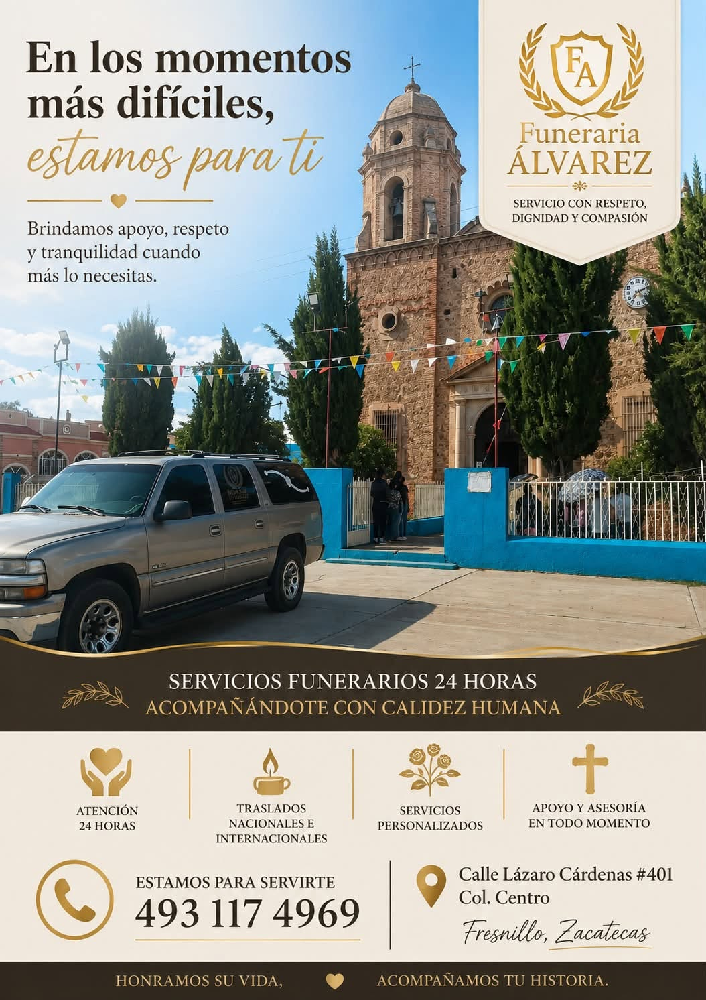
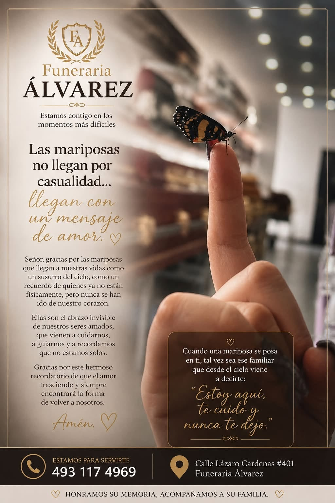
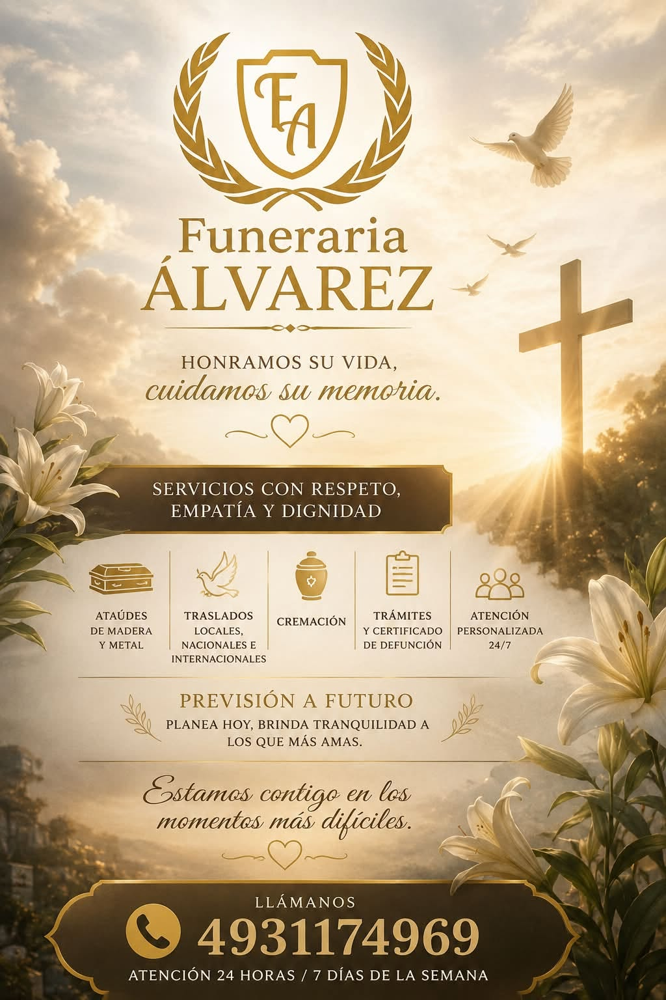
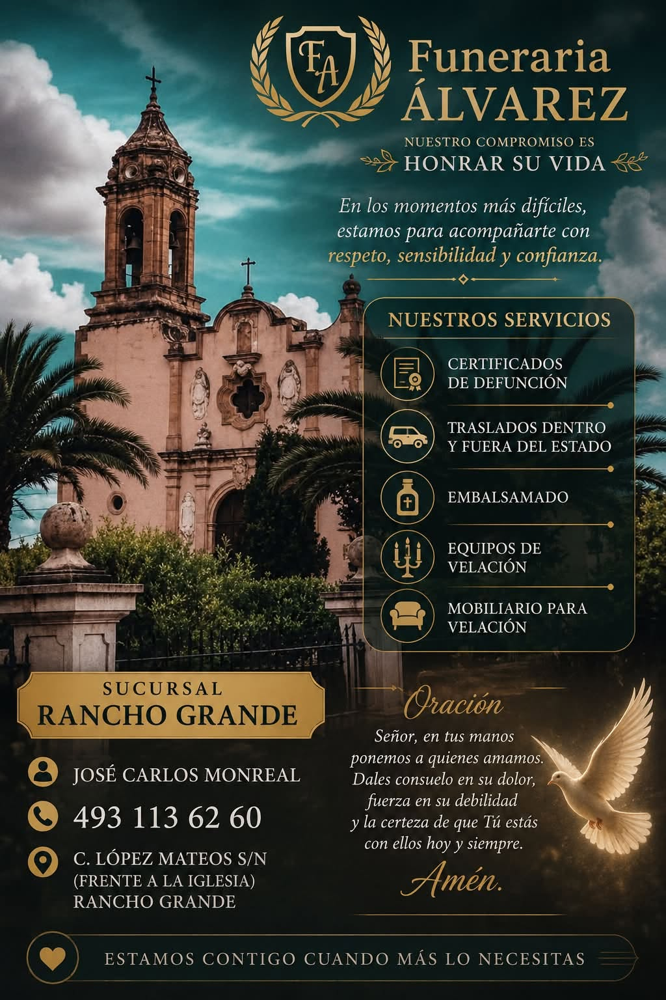
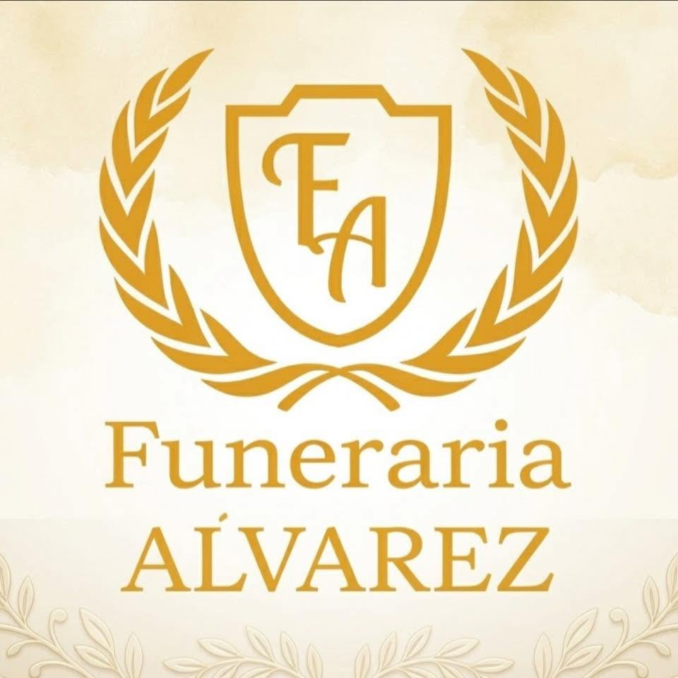
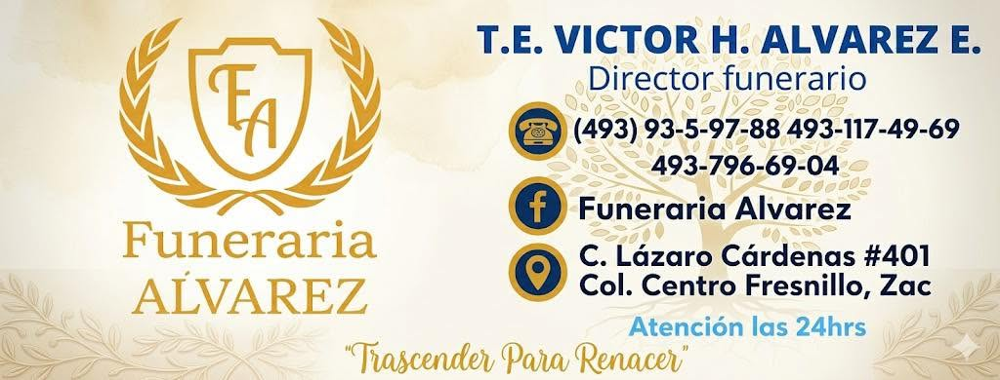

Fresnillo, Zacatecas - Atención 24 horas
Funeraria Alvarez honramos su vida, cuidamos su memoria.
Apoyo inmediato en |
Acompañamos a las familias en los momentos más delicados con servicios funerarios integrales, trato sensible y asesoría clara para cada decisión.

permanente
Sobre Funeraria Alvarez
Un acompañamiento cercano cuando la familia más lo necesita.
Funeraria Alvarez ofrece apoyo y soluciones integrales en momentos delicados. Cada detalle se atiende con sensibilidad, cuidado y profesionalismo para brindar tranquilidad a las familias en duelo.
Respeto en cada decisión
Orientación serena para resolver lo necesario sin añadir presión a la familia.
Calidez humana
Un trato compasivo, claro y disponible para acompañar a quienes atraviesan el duelo.
Servicios integrales
Traslados, trámites, velación, ataúdes, cremación y asesoría desde un solo lugar.
Nuestros Servicios
Soluciones funerarias con respeto, empatía y dignidad.
Atendemos a la familia con procesos claros, disponibilidad permanente y servicios personalizados.

Acompañamiento 24 horas
Respuesta humana y orientación paso a paso para tomar decisiones con calma.
- Atención personalizada 24/7.
- Apoyo y asesoría en todo momento.
- Organización de servicios personalizados.
- Planeación y previsión a futuro.

Todo lo necesario para honrar una vida
Opciones cuidadas para velación, despedida y disposición final.
- Ataúdes de madera y metal.
- Cremación.
- Embalsamado.
- Equipos de velación.
- Mobiliario para velación.

Gestión clara de cada proceso
Apoyo profesional para traslados y documentación necesaria.
- Traslados locales, nacionales e internacionales.
- Traslados dentro y fuera del estado.
- Trámites y certificado de defunción.
- Coordinación con atención continua para la familia.
Estamos contigo cuando más lo necesitas. Una llamada puede iniciar el acompañamiento.
Llamar ahora¿Por qué elegirnos?
Serenidad, claridad y presencia en cada paso.
Atención permanente
Servicio disponible 24 horas, los 7 días de la semana.
Trámites guiados
Acompañamiento para documentación y certificado de defunción.
Servicio personalizado
Opciones de velación, mobiliario, ataúdes y despedida conforme a cada familia.
Presencia local
Atención en Fresnillo y referencia de sucursal en Rancho Grande.
Galería
Imagen institucional y presencia de servicio.
Material visual proporcionado por Funeraria Alvarez para comunicar cercanía, disponibilidad y acompañamiento.


Contacto
Estamos para servirte, día y noche.
Comunícate por llamada, WhatsApp o visítanos en nuestra ubicación principal en Fresnillo.
-
C. Lázaro Cárdenas #401, Col. Centro, Fresnillo, Zacatecas
Cómo llegar (Google Maps) - 493 117 4969
- +52 1 493 117 4969 (WhatsApp)
- hugoalvarez.funerales@gmail.com
C. López Mateos S/N, frente a la iglesia. Tel. 493 113 6260